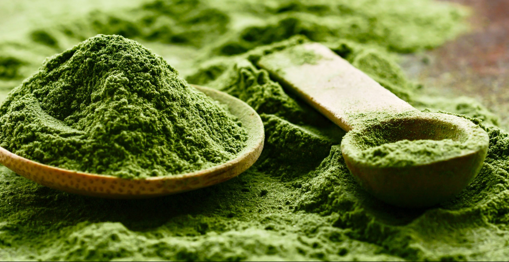

Sejarah
Kebiasaan minum teh dimulai di Tiongkok pada zaman Dinasti Tang, namun baru menjadi populer pada zaman Dinasti Song. Khasiat dan cara membuat teh dicatat dalam kitab Cha Ching sekitar abad ke-8. Pada zaman Heian, orang Jepang hanya mengenal Dancha (teh dalam bentuk bulatan seperti bola). Matcha diperkirakan pertama kali dibuat di Tiongkok pada abad ke-10. Orang Jepang mengenal matcha sejak abad ke-12 (zaman Kamakura) setelah matcha dibawa ke Jepang oleh pendeta Zen aliran Rinzai bernama Eisai.